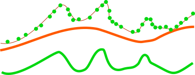

DESCRIPTION
The r.in.lidar module loads LAS LiDAR point clouds into a new
raster map using binning. The user may choose from a variety of
statistical methods which will be used for binning when creating
the new raster.
Since a new raster map is created during the binning, the binning of
points depends on the current computational region settings
(extent and resolution) by default (see more about binning below).
When using the -e flag, the binning will be done in the extent
of the point cloud, so the resulting raster will have extent based on
the input point cloud.
When the resolution=value parameter is used,
the binning is done using the provided resolution and the resulting
raster will have that resolution (see more below for more information
about extent and resolution management).
r.in.lidar is designed for processing massive point cloud
datasets, for example raw LiDAR or sidescan sonar swath data. It has
been tested with large datasets (see below for memory management
notes).
Binning
The main difference between r.in.lidar and
v.in.lidar is that
r.in.lidar creates a raster instead of just importing the
points into GRASS GIS. However, r.in.lidar does not merely
rasterizes the points from the point cloud. r.in.lidar
uses binning to derive values for individual raster cells,
so the value of a cell is typically an aggregation of values
of individual points falling into one cell.
In general binning is the conversion of points into a regular grid.
The binning of points with X and Y coordinates starts with the overlay
of a grid of bins over the points.
In the basic case, binning is a method which counts the number of
points which fall into one raster cell, i.e. bin. The number of points
per cell (bin) indicates the density of points in the point cloud.
The cell (bin) is always square or rectangular in case of
r.in.lidar because the result is GRASS GIS 2D raster.
The result of binning where the number of point per cell is counted
is sometimes called 2D (two dimensional) histogram because
a histogram is used in univariate statistics (in one dimension)
to count the number samples falling into a given bin.


Figure: The binning on left was used to count number of points per
(sometimes also called 2D histogram). The numbers in cells are
examples of counts, the rest is represented by the color.
The binning on right was used with mean to create a surface
based on the values associated with the points. The numbers
show examples of cell values. Note also the cells without any points
which were assigned the NULL value.
The basic concept of binning is extended when the points have another
value associated with them. For LiDAR data this value can be the Z
coordinate or intensity. The value for a given cell (bin) is computed
using univariate statistics from the values of all points in the cell.
For example, computing the mean value of Z coordinates can yield
a raster representing the digital elevation model. Another example is
the range of Z coordinates which can be used as a rough estimate of
vegetation height.
Statistics
Available statistics for populating the output raster map are:
- n
- This computes the number (count) of points per cell. The result
is a indicator of spatially variable density of points in the given
area.
- min
- This finds the minimum of point values in each cell.
It can be useful when finding topography in a forested or urban
environment and there is a lot of points per one cells (terrain is
oversampled considering the desired resolution).
It can also create surfaces independent on the noise from premature
hits as it will always select the lowest point.
- max
- This finds the maximum of point values in each cell.
In connection with base_raster it can yield maximum vegetation
of feature height per cell.
For this purpose, it is usually much more appropriate than mean
which would yield heights mostly influenced by the vertical
distribution of points.
- range
- This computes the range of point values in each cell.
The range of Z coordinates per cell can be used as a rough estimate of
vegetation height when the cells are small enough, slopes low
and the area is mostly vegetated.
However, for more profound analysis, the base raster together with
different statistics is recommended.
- sum
- This computes the sum of point values per cell.
This is useful especially when intensity is used as a value
(flags -i and -j).
- mean
- This is a mean (average) value of point values in cell.
When used with Z coordinates (the default) and points from the ground
class, the resulting raster is a digital elevation model.
When intensity is used as a point value, the resulting raster contains
mean intensity per cell.
Note that mean gives heights influenced by the vertical
distribution of points
- stddev
- This computes the standard deviation of point values for each
cell.
- variance
- This computes the variance of point values for each cell.
Variance and derivatives use the biased estimator (n)
[note that this might be subject to change].
- coeff_var
- This computes the coefficient of variance of point values for each
cell. Coefficient of variance is given in percentage and defined as
(stddev/mean)*100.
- median
- This computes the median of point values for each cell
- percentile
- pth (nth) percentile of points in cell
- skewness
- This is a skewness of point values in cell
- trimmean
- This is a trimmed mean of point values in cell.
Trimmed mean also know as truncated mean is a mean
computed after discarding values at the low end and at the high end.
How many values to discard is given by the trim option
in percent. In statistics the usual percentage of trimmed values ranges
from 5 to 25 percent.
Note that different statistics have different memory requirements
(see below for details).
Filtering
Points falling outside the current computational region will be skipped.
This includes points falling exactly on the southern region
bound. To capture those adjust the region with:
See g.region for details about
computation region handling in GRASS GIS.
The zrange parameter may be used for filtering the input data by
vertical extent. Example uses include
filtering out extreme outliers and outliers on relatively flat terrain.
This parameter can be also used for cutting the point cloud into
vertical sections preparing it for further processing
by separate sections, together as if it would be an imagery group
(see i.group), or combined into
a 3D raster using r.to.rast3.
In for these last examples, it might actually be more advantageous
to use r3.in.lidar module.
The zrange parameter is especially powerful when used
together with the base_raster parameter. The zrange
is applied to Z values after the base_raster reduction.

Figure: This is the principle of zrange filter. Points with the
Z coordinate value below the lower value in the range (here 180)
are filtered out (blue points) and same applies for points above
higher value in the range (here 250). All other points are preserved
(green points).
A LiDAR pulse can have multiple returns. The first return values can be
used to obtain a digital surface model (DSM) where e.g. canopy cover is
represented. The last return values can be used to obtain a digital
terrain model (DTM) where e.g. the forest floor instead of canopy
cover is represented. The return_filter option allows selecting
one of first, mid, or last returns. Return number and number of returns
in the pulse associated with each point are compared to determine
if the point is first, mid, or last return.
LiDAR points often come as already classified into standardized classes.
For example, class number 2 represents ground. For other classes see
LAS format specification in references. The class_filter option
allows selecting one or more classes using numbers (integers) separated
by comma.
In varied terrain the user may find that min maps make for a good
noise filter as most LIDAR noise is from premature hits. The min map
may also be useful to find the underlying topography in a forested or urban
environment if the cells are oversampled.
The user can use a combination of r.in.lidar output maps
to create custom raster-based filters, for examplee, use
r.mapcalc to create
a mean-(2*stddev) map. (In this example the user may want to
include a lower bound filter in r.mapcalc to remove highly
variable points (small n) or run r.neighbors to
smooth the stddev map before further use.)
Note that proper filtering of the input points in not only critical for
the analysis itself but it can also speed up the processing.
Reduction to a base raster
For analysis of features on the terrain surface, especially vegetation
it is advantageous to remove the influence of the terrain on heights
because the height above the terrain is important (e.g. height of
a tree) rather than height of the top of the tree above the see level.
In this case, the base raster would be digital elevation model
which can be one derived from the point cloud, or obtained in
some other way. LiDAR data often come with precomputed DEMs
(quality should be checked in this case) and there is often a DEM
available for a given area (fit with the point cloud, especially
vertical, and resolution should be checked).

Figure: This is a profile of base raster (in orange) representing
digital elevation model and selected points, e.g. first return,
from point cloud (green dots). By default the points would create
a digital surface model (thin brown line) but after reducing the
Z coordinates using the base raster, the created surface is a
derived from the height of points relative to the base raster.
The usage of base raster is not limited to digital elevation model.
The base raster can be any surface which has some relation to the
point values, for example digital surface model representing
top of the canopy.
Setting extent and resolution
Since the creation of raster maps depends on the computational
region settings (extent and resolution), as default the current
region extents and resolution are used for the import. When using
the -e flag along with the resolution=value
parameter, the region used for the new raster will be based
the point cloud extent and the provided resolution. It is therefore
recommended to first use the -s flag to get the extents of the
LiDAR point cloud to be imported, then adjust the current region extent
and resolution accordingly, and only then proceed with the actual import.
Another option is to automatically set the region extents based on the
LAS dataset itself (-e flag) along with the desired raster
resolution. The best option is to know the point cloud extent ahead,
e.g. from tiling scheme, and use it. See below for details.
Since the r.in.lidar generates a raster map through binning
from the original LiDAR points, the target computational region
extent and resolution have to be determined. A typical workflow
would involve the examination of the LAS data's associated
documentation or the scan of the LAS data file with
r.in.lidar's -s (or -g) flag to find the input
data's bounds.
Another option is to automatically set the region extents based on the
LAS dataset extent (-e flag) along with the desired raster
resolution using the resolution parameter.
Using the -s scan flag, the extent of the input data (and thus
point density) is printed. To check this is recommended before performing
the full import. The -g shell style flag prints the extent suitable
as command line parameters for g.region.
A simpler option is to automatically set the region extents based on the
LAS dataset (-e flag) along with the target raster resolution using
the resolution parameter. Also here it is recommended to verify
and optimize the resulting region settings with g.region prior
to importing the dataset.
NOTES
Format and projection support
The typical file extensions for the LAS format are .las and .laz
(compressed). The compressed LAS (.laz) format can be imported only if
libLAS has been compiled with LASzip support. It is also recommended to
compile libLAS with GDAL which is used to test if the LAS projection
matches that of the GRASS location.
LAS file import preparations
Note that the scanning (-s or -g flags) needs to iterate
over the whole point cloud. This will take a long time for large
datasets, so if the user knows the approximate extent of the dataset,
for example because it dataset for one county or tiling scheme is
available as vector polygons, it is much more advantageous to provide
the extent information instead of retrieving it from the dataset.
The same applies to the -e flag which also needs to perform
scanning before the binning begins.
Also note that the scanning does not apply any filters, so the
extent determined by scanning can be theoretically bigger than
the extent actively used during the binning.
This behavior ensures that the newly created raster has always
the same extent regardless the filters used.
However, for most cases (considering the point cloud and the resolution
used) there is no difference between the extent without filters applied
and the extent if the filters would be applied.
Memory consumption
While the input file can be arbitrarily large, r.in.lidar
will use a large amount of system memory (RAM) for large raster regions
(> 10000x10000 pixels).
If the module refuses to start complaining that there isn't enough memory,
use the percent parameter to run the module in several passes.
In addition using a less precise map format (CELL [integer] or
FCELL [floating point]) will use less memory than a DCELL
[double precision floating point] output map.
For method=n, the CELL format is used
automatically.
The mean and range methods will use average amount
of memory (comparing to other methods).
Methods such as n, min, max, and sum will use
less memory,
while stddev, variance, and coeff_var will use more.
The memory usage for regular statistics mentioned above is based solely
on region (raster) size.
However, the aggregate functions median, percentile, skewness
and trimmean will use more memory and may not be
appropriate for use with arbitrarily large input files without
a small value for the percent option because unlike
the other statistics memory use for these also depends on
the number of data points.
The default map type=FCELL is intended as compromise between
preserving data precision and limiting system resource consumption.
Trim option
Trim option value is used only when calculating trimmed mean values.
Attempt to use it with other statistical methods will result in an error.
EXAMPLES
Simple example of binning of point from a LAS file into a newly created
raster map in an existing location/mapset (using metric units):
# set the computational region automatically, resol. for binning is 5m
r.in.lidar -e -o input=points.las resolution=5 output=lidar_dem_mean
g.region raster=lidar_dem_mean -p
r.univar lidar_dem_mean
Finding suitable extent and resolution
Using the -s scan flag, the extent of the input data (and thus
point density) is printed. To check this is recommended before performing
the full import. The -g shell style flag prints the extent suitable
as command line parameters for g.region.
A simpler option is to automatically set the region extents based on the
LAS dataset (-e flag) along with the target raster resolution using
the resolution parameter. Also here it is recommended to verify
and optimize the resulting region settings with g.region prior
to importing the dataset.
For the output raster map, a suitable resolution can be found by
dividing the number of input points by the area covered (this requires
an iterative approach as outlined here):
# print LAS metadata (Number of Points)
r.in.lidar -p input=points.las
# Number of Point Records: 1287775
# scan for LAS points cloud extent
r.in.lidar -sg input=points.las output=dummy -o
# n=2193507.740000 s=2190053.450000 e=6070237.920000 w=6066629.860000 b=-3.600000 t=906.000000
# set computation region to this extent
g.region n=2193507.740000 s=2190053.450000 e=6070237.920000 w=6066629.860000 -p
# print resulting extent
g.region -p
# rows: 3454
# cols: 3608
# points_per_cell = n_points / (rows * cols)
# Here: 1287775 / (3454 * 3608) = 0.1033359 LiDAR points/raster cell
# As this is too low, we need to select a lower raster resolution
g.region res=5 -ap
# rows: 692
# cols: 723
# Now: 1287775 / (692 * 723) = 2.573923 LiDAR points/raster cell
# import as mean
r.in.lidar input=points.las output=lidar_dem_mean method=mean -o
# import as max
r.in.lidar input=points.las output=lidar_dem_max method=max -o
# import as p'th percentile of the values
r.in.lidar input=points.las output=lidar_dem_percentile_95 \
method=percentile pth=95 -o

Mean value DEM in perspective view, imported from LAS file
Further hints: how to calculate number of LiDAR points/square meter:
g.region -e
# Metric location:
# points_per_sq_m = n_points / (ns_extent * ew_extent)
# Lat/Lon location:
# points_per_sq_m = n_points / (ns_extent * ew_extent*cos(lat) * (1852*60)^2)
Serpent Mound dataset
This example is analogous to the example used in the GRASS wiki page for
importing LAS as raster DEM.
The sample LAS data are in the file "Serpent Mound Model LAS Data.las",
available at
appliedimagery.com:
# print LAS file info
r.in.lidar -p input="Serpent Mound Model LAS Data.las"
# using v.in.lidar to create a new location
# create location with projection information of the LAS data
v.in.lidar -i input="Serpent Mound Model LAS Data.las" location=Serpent_Mound
# quit and restart GRASS in the newly created location "Serpent_Mound"
# scan the extents of the LAS data
r.in.lidar -sg input="Serpent Mound Model LAS Data.las"
# set the region to the extents of the LAS data, align to resolution
g.region n=4323641.57 s=4320942.61 w=289020.90 e=290106.02 res=1 -ap
# import as raster DEM
r.in.lidar input="Serpent Mound Model LAS Data.las" \
output=Serpent_Mound_Model_LAS_Data method=mean

Figure: Elevation for the whole area of Serpent Mound dataset
Height above ground
The mean height above ground of the points can be computed for each
raster cell (the ground elevation is given by the raster map
elevation):
g.region raster=elevation -p
r.in.lidar input=points.las output=mean_height_above_ground base_raster=elevation method=mean
Multiple file input
The file option requres a file that contains a list of file names with the full
path. For example, a list of files in the directory /home/user/data:
points1.laz
points2.laz
points3.laz
/home/user/data/points1.laz
/home/user/data/points2.laz
/home/user/data/points3.laz
ls /home/user/data/*.laz > /home/user/data/filelist.txt
dir /b c:\users\user\data\*.laz > c:\users\user\data\filelist.txt
g.region raster=elevation -p
r.in.lidar file=/home/user/data/filelist.txt output=mean_height_above_ground base_raster=elevation method=mean
import glob
import gscript
file_list_name = '/home/user/data/filelist.txt'
with open(, mode='w') as file_list:
for path in glob.iglob('/home/user/data/lidar/*.las'):
file_list.write(path + "\n")
gscript.run_command('r.in.lidar', file=file_list_name,
output='mean_height_above_ground',
base_raster='elevation' method='mean')
KNOWN ISSUES
- The "nan" value (as defined in C language) can leak into
coeff_var raster maps. Cause is unknown. Possible
work-around is: r.null setnull=nan or
r.mapcalc 'no_nan = if(map == map, map, null())'.
- Only one method can be applied for a single run and multiple map
output from a single run
(e.g. method=string[,string,...] output=name[,name,...]
or n=string mean=string) is no supported.
If you encounter any problems (or solutions!) please contact the GRASS
Development Team.
SEE ALSO
g.region,
r.in.xyz,
r.mapcalc,
r.univar,
v.in.lidar,
r3.in.lidar,
v.vect.stats
v.lidar.correction,
v.lidar.edgedetection,
v.lidar.growing,
v.outlier,
v.surf.bspline
Trimmed mean
(Truncated mean, Wikipedia article),
OpenTopography
(LiDAR point cloud repository)
REFERENCES
AUTHORS
Markus Metz
Vaclav Petras,
NCSU GeoForAll Lab
(base_raster option, documentation)
based on r.in.xyz by Hamish Bowman and Volker Wichmann